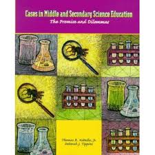

Spectrum Educational Tool
an online resource training for student
teachers
| Logout |
Cases from middle and secondary science education

Cases from middle and secondary science education: The promise and Dilemma is about the problematic situations that arise in middle school and secondary science teaching and about dealing with these situations. The science teachers, teacher educators, and scientists who have contributed to this book are experts in many aspects of science and science teaching and learning. This books is ideal for use as a problem-solving vehicle for preservice teachers. It will assist them in developing an understanding of prevailing instructional practices in science at the middle and secondary levels and current attempts to reform traditional approaches to science teaching and learning.